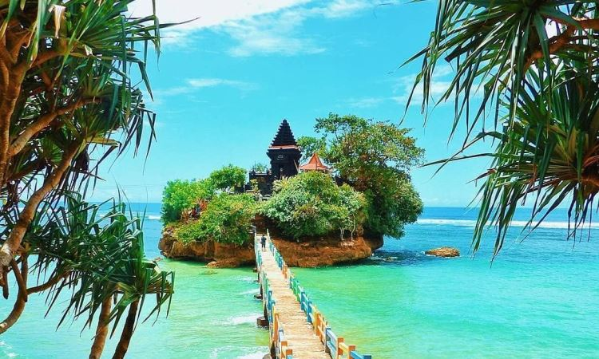
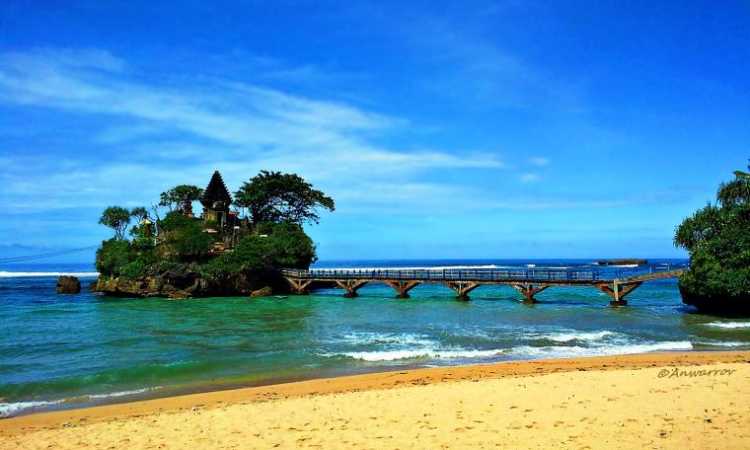

Balekambang Beach is a beach on the south coast which is located on the edge of the Indonesian Ocean. Administratively it is part of Sumber Jambe Hamlet, Srigonco Village, Bantur District, Malang Regency, East Java and is one of the tourist attractions in Malang Regency from 1985 until now. The main attraction of Balekambang is of course the natural panorama, the waves that extend for almost two kilometers, and the vast expanse of sand. The white sand area looks clean from rubbish and dirt so it is quite comfortable for visitors to play and exercise.
 Tour Type : Adventure
Participants : 1-12 Persons
Price : Rp10.000
Rating : 4 Stars
Categories : Beach & Temple